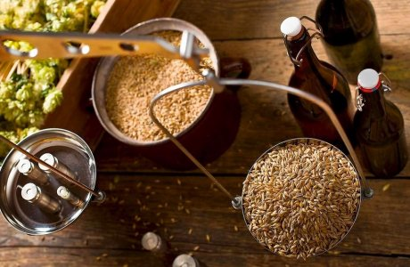
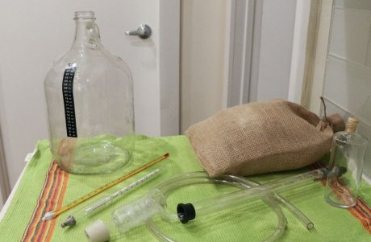
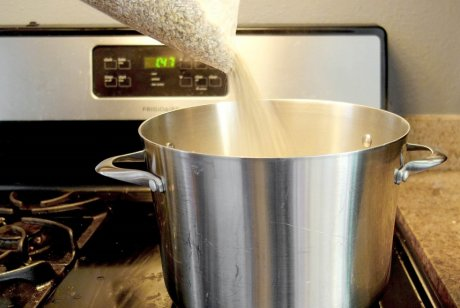
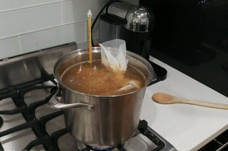
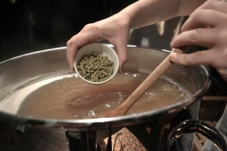

moneycrashers.com
Домашнее пиво выгодно отличается от магазинного как отсутствием консервантов, так и более насыщенным вкусом, густой пеной и свежестью. Чтобы сварить его, вовсе не обязательно иметь дорогое оборудование, необходимое есть на каждой кухне.
Многие успешные владельцы крафтовых пивоварен начинали свой путь в бизнес именно с домашнего приготовления этого любимого многими напитка. Экспериментируя с рецептурой, они сделали свое увлечение профессией. Кто знает, может и вас этот процесс затянет, ведь он может быть очень увлекательным и захватывающим (и не только в плане употребления конечного продукта).
Начнем знакомство с пивоварением в домашних условиях с рецепта классического зернового хмельного напитка.
Ингредиенты для варки пива дома

Прежде чем приступить к домашнему пивоварению, нужно подготовить все необходимое. Кое-что, скорее всего, есть у вас дома, а на что-то придется и потратиться. Начнем с ингредиентов. В домашних условиях этот хмельной напиток варят двумя способами: экстрактным и зерновым.
Первый, конечно, проще и быстрее, т.к. используется готовый солодовый экстракт, исключается процесс затирания солода и его фильтрования, но такой способ и дороже. К тому же нельзя быть до конца уверенным в качестве приобретенного продукта.
Зерновой способ варки пива более трудоемкий, однако он надежнее и дает возможность почувствовать себя настоящим пивоваром. Что касается ингредиентов, то рецепт классического хмельного напитка включает всего четыре компонента: воду (лучше использовать отфильтрованную или бутилированную), зерновой солод (обычно ячменный), хмель и пивные дрожжи.
На ингредиентах лучше не экономить, ведь от них зависит качество будущего напитка. Солод, хмель и дрожжи лучше покупать в специализированных магазинах для пивоварения, некоторые из них предлагают услугу по дроблению зерна.
При покупке хмеля обращайте внимание на его цвет и содержание альфа-кислот (указывается на упаковке). Оптимально, если хмелевые шишки имеют желто-зеленый оттенок (серые – недозревшие, а красноватые – перезревшие), а альфа-кислот в них содержится 4,5%.
Вам потребуется 27 л воды, 45 г хмеля, 4 кг ячменного солода и 25 г пивных дрожжей. Для процесса карбонизации необходима еще декстроза или сахар из расчета 8 г на 1 л напитка.
Оборудование для варки пива в домашних условиях

Чтобы сварить любимый хмельной напиток в домашних условиях, вам не стоит сразу разоряться на покупку пивоварни. На первый раз можно воспользоваться и обычной кастрюлей на 30 л: эмалированной или из нержавеющей стали, в которой вы будете варить сусло.
Также вам потребуются емкость для сбраживания (лучше для этих целей подойдет большая стеклянная бутыль) и для нее крышка с отверстием для гидрозатвора и, собственно, сам гидрозатвор.
Не обойтись вам и без пищевого или пивоваренного термометра, силиконовой трубки для снятия пива с осадка, лопатки для перемешивания, марли или тканевого мешочка для варки сусла и бутылок для розлива пенного напитка.
Все приспособления для варки пива должны быть продезинфицированы, чтобы не заразить пивное сусло дикими дрожжами или патогенными микроорганизмами. Некоторые пивовары в качестве дезсредства используют йод (2,5 мл на 10 л воды) или део-хлор (1 таб. на 5 л воды).
Как сварить домашнее пиво

Процесс приготовления домашнего пива состоит из шести основных этапов, не считая подготовительного (дезинфекции приспособлений). Занимает он достаточно много времени, так что наберитесь терпения, ведь насколько удалось пиво, вы узнаете не раньше, чем через месяц с момента его варки.
Первый этап: дробление солода
Чтобы при варке сусла содержащийся в зерне крахмал быстрее расщепился на сахар и декстрины, зерно необходимо раздробить, стараясь не повредить его оболочку. Для этого есть специальные дробилки для пивоваров. А можно воспользоваться дедовским методом и сделать это с помощью скалки или механической мясорубки.
Чем тоньше помол зерна, тем больше сахаров перейдет в сусло, но это затруднит процесс его фильтрации. Поэтому опытные пивовары советуют делать помол средний между тонким и грубым.
Впрочем, зерно могут раздробить в магазине, где вы его покупаете. Поскольку после измельчения зерно окисляется, хранить его долго нельзя. Поэтому приобретать такой ингредиент нужно незадолго до варки.
Второй этап: затирание сусла

Смешивание дробленого солода с горячей водой называется затиранием сусла. Проще этот процесс сделать с помощью сшитого из сложенной в 3-4 слоя марли или тканевого мешка. Так не придется фильтровать сусло.
Налейте в большую кастрюлю 25 л воды и подогрейте ее до 78°C. Дробленый солод поместите в тканевый или марлевый мешок и опустите в емкость с горячей водой и варите 1,5 часа при температуре 61-72°C.
Температура в 61-63°C повышает крепость домашнего пива, способствуя лучшему выходу сахаров. Ее повышение на 7-9°C (до 68-72°C) увеличивает плотность сусла и делает вкус будущего напитка более насыщенным, но снижает его градус. Чтобы получить плотное пиво крепостью 4%, нужно поддерживать температуру на уровне 65-72°C.
После 90 минут затирания сусла проверьте, остался ли в нем крахмал. Для этого 1 ст.л. раствора вылейте на светлое блюдце и капните в него йода. Если цвет стал темно-синим, проварите еще четверть часа.
Если цвет сусла не изменился даже после дополнительных 15 минут варки, увеличьте температуру до 80°C и проварите еще 5 мин. Это остановит процесс ферментации.
Мешок с дробленым солодом достаньте из кастрюли и промойте его содержимое 2 л кипяченой воды (температура 78°C). Воду, содержащую остатки солода, вылейте в кастрюлю, где он варился.
Третий этап: кипячение сусла

Третий этап включает в себя не только нагрев находящегося в кастрюле сусла до температуры кипения, но и его охмеление. После того как жидкость закипит, в нее добавляют первую часть хмеля (15 г), спустя полчаса – еще 15 г и через 40 минут после этого – последнюю порцию этого ингредиента, придающего напитку характерный вкус и аромат.
Процесс кипячения сусла занимает 1,5 часа. За это время происходит его стерилизация (гибнут все микроорганизмы, способные испортить вкус пива), выпариваются нежелательные компоненты и происходит коагуляция белковых веществ, которые выпадают в осадок. В результате вкус сусла улучшается, и оно становится прозрачнее.
Четвертый этап: охлаждение сусла
Сваренное по всем правилам сусло нужно очень быстро охладить до температуры 24-25°C, чтобы в него не попали вредные бактерии или дикие дрожжи, которые могут заразить будущее пиво. Это можно сделать с помощью специального приспособления – чиллера, который погружают в кастрюлю с суслом.
Если его нет, емкость нужно опустить в ванну с ледяной водой. Пока сусло остывает, активируйте пивные дрожжи. Для этого высыпьте их в теплую кипяченую воду (температура не должна быть выше 28°C).
Охлажденное сусло с помощью воронки с марлей перелейте в бутыль для брожения.
Пятый этап: брожение сусла
гидрозатвор
В бутыль с охлажденным суслом вылейте подготовленные дрожжи. Закройте ее пробкой и хорошо взболтайте. Затем отнесите бутыль в темное место, где поддерживается температура 24-25°C, и вставьте в крышку гидрозатвор. Он необходим для вывода углекислого газа и недопущения проникновения в емкость воздуха.
Через 6-12 часов сусло начинает активно бродить. Этот процесс длится обычно 7-10 дней. Спустя это время, сваренное вами пиво посветлеет, прекратятся выделяться пузырьки. Нужно выждать еще несколько дней.
Шестой этап: карбонизация пива
Карбонизация – это процесс насыщения пива углекислым газом, который улучшает его вкус и способствует появлению пены.
Закончившее брожение пиво называют зеленым, т.к. его созревание еще не завершено. Напиток из бутыли с помощью силиконовой трубки перелейте в подготовленные продезинфицированные бутылки: стеклянные или пластиковые.
В каждую бутыль всыпьте по 8 г на 1 л декстрозы или сахара, которые вызовут небольшое вторичное брожение и насытят хмелевой напиток углекислым газом. Когда к горлышку бутылки подойдет пена, закупорьте тару. Поставьте ее еще на месяц в темное помещение с температурой 24-25°C. Каждую неделю встряхивайте емкости с пивом.
По истечении этого срока пиво можно убрать в холодильник или погреб и приступать к дегустации. Это живой напиток, дрожжи в нем продолжают работать, улучшая его качество. Поэтому храниться такое домашнее пиво может 8 месяцев и более.
Еще один способ варки пива в домашних условиях показан на видео.
Не отчаивайтесь, если с первого раза пиво у вас получилось не таким, как вы ожидали. Возможно, где-то была допущена ошибка, или в сусло "пробрались" вредные микроорганизмы. Со временем вы отладите процесс и разработаете свой уникальный рецепт. Помните только, что чрезмерное увлечение этим напитком вредит вашему здоровью.